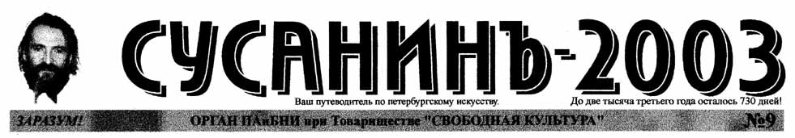

ОН РАСТЕТ НА РАДОСТЬ НАМ НЕ ПО ДНЯМ, А ПО ЧАСАМ!
ОН ПЬЕТ ЗА СВЕТЛУЮ ПАМЯТЬ АННЫ АНДРЕЕВНЫ Б. Ахмадулина НОНКОНФОРМИСТОВ ОЦИФРОВАЛИ ПЕТЕРБУРГСКАЯ КИБЕРФЕМИНИСТКА НА ФЕСТИВАЛЕ В ПЕРМИ Соб.кор. БАНК СПЕРМЫ ПУШКИНСКОЙ-10 А. Хлобыстин А ОСЕТРИНА-ТО С ДУШКОМ...
Н.Понажовченко ОГНЕУПОРНЫЙ КОЛОВСКИЙ М.Папъшев-Порно ТИТАН Лиля Путова ПРЕСЛЕДОВАНИЯ МАЛЬЧИКОВ А.Велосипедов | БОДРЕЙ БОРЕЙ! В. Зефиров РЮРИКОВИЧИ МЫ! П.Гамлет ЖУРНАЛИСТСКИЕ НРАВЫ Д.Пилкин PRO ТРУСЫ В.Путти |
Замяукали котята: "Надоело нам мяукать! Мы хотим, как поросята хрюкать!"
Ныне мода такова, что журналисты становятся кураторами, а художники журналистами. Например, журналисты М. Колдобская, Е. Деготь и Т. Кондратович (М. Климова) занялись выставочными проектами. Одновременно художники и музейщики С. Бугаев, А. Белкин, А. Ипполитов и А. Боровский занялись журналистикой. Любопытно, что те и другие мотивируют смену ориентации актуальностью чуждого им ранее жанра. |
Продолжается исход спортсменов из спорта. Известный легкоатлет В.Савчук переболев философией стал актуальным художником-зайчистом. И. Чукигек Продолжается приток деятелей современного искусства в спорт |
|
В материалах СЫ №8 был допущен ряд серьезных ошибок в трактовке образа художника Л. Борисова, вызвавших его справедливое возмущение. Так, например, он назван "скромным и уравновешенным человеком" и "интеллигентом-очкариком". Всем, кто лично знаком с этим человеком, бросилась в глаза абсурдность, и даже оскорбительность таких характеристик. Ред. |
|
СЬ уже писал о драках среди петербургских поэтов и художников. Вслед за ними в дело вступили удальцы-критики и артисты. ПОТАСОВКА В КОТЛЕТНОЙ У ГЕЛЬМАНА. П.Киевский-Котлеточкин МОРДОБОЙ В БАЛДОМЕ | МАМА МИА! АНАЛИЗЫ КРИТИКА Надежда Невыносимова | ВРУЧЕНИЕ ПРЕМИИ БЕЛОВА У НАБОКОГО Г. Коноплев ОТВЕДАЛИ ТУМАКОВ А.Наушев-Лапшин |
ОСТОРОЖНО!
АКТУАЛИСТЫ - СЕКТА ДЕСТРУКТИВНОГО КУЛЬТА!
КАК УЗНАТЬ АКТУАЛИСТА?
Художественная Воля |
| БУДЕТЛЯНИ? |
|---|
Пассионарная вспышка 80-х годов, произошедшая в Ленинграде,
как ни странно, не привела к демографическому взрыву в художественных кругах.
По не установленным пока причинам, он начался в 90-х и достиг апогея в момент
экономического кризиса. Ю. Деточкин |
МЫ ГДЕ? | TAM-TAM-ТАРАМ, ТАМ-ТАРАМ... |
|---|---|
|
"Мы вместе!" провозгласил К.Кинчев. Л.Задов |
Там, за балтийским горизонтом произошла встреча двух петербургских гениев Бродского и Т.Новикова. У них нашлось много общего: оба живут на Литейном, воспевают Васильевский о. и обладают эффектными профилями. Выставка двух небожителей, посвященная Горизонту, открылась в Navicula Artis. А.С.Пушкин |
МАКСИМКА-АКТИВИСТ | НОВИНКИ ГОДА |
|---|---|
|
Поклонником богатого рекламного журнала "Активист" оказался редактор бедного молодежного издания "Максимка" М.Райский, опубликовавший дифирамбическую рецензию в буклете "АРТ&ФАК". И это не удивительно. Ведь главный редактор "Активиста" С.Бугаев-Африка, защищавший честь России на Венецианской Биеннале некоронованный родоначальник и идеолог всего молодого постмодернистского движения 90-х, представленного Новыми Тупыми, М.Колдобской, И.Баскиным, В.Савчуком и др. Но им еще предстоит блистать на биенналях и печататься на глянцевой, а пока надо поупражняться в черно-белом нонпрофите. Все еще впереди! А.Белькин |
Лучшей журнальной новинкой года экспертами СЫ был признан "АктивистЪ". |
ВОРХОЛИЗЫ | ФУТБОЛИЗМ (по материалам "Коммерсанта") |
|---|---|
|
В 2000 году петербургские искусствоведы в коллективном порядке осознали для себя острую актуальность искусства Э. Ворхола. Эта причудливая массовая мания приобрела опасные формы, напоминающие групповые радения сектантов, переходящие в судороги и пляску св. Вита. Под видом маскарада новопосвященные собрались в ночь американского сатанинского праздника Холуйин на 13 этаже Нобелевского Центра. Наиболее рьяно отнеслась к шабашу публика, пока не избалованная такого рода развлечениями: арт-администраторы, критики, музейные сотрудники. На балбесов большинство вырядилось вампирами и скелетами, но некоторые явились в костюмах самих себя. К.Долинина предстала милиционершей, А.Ипполитов пришел в костюме живого трупа, Л.Коловская костюме Л.Коловской, И.Чечот в костюме И.Чечота, Е.Андреева царила в образе кошачьего туалета, Л.Лурье оделся пелевинским буржуином, З.Коловский песняром, Р.Григорьев китайским чинушей, Дж.Ломбард длинноногой девчонкой в мини-юбке. А.А.Халявка | В эти дни на стадионе со своим народом была бы Анна Ахматова ("наша Зенитка"), Николай Гумилев, Андрей Белый. Поболеть за честь родного города, на трибуны Петровского пришли бы и Хармс с Олейниковым, и Ватинов с Введенским. Л.Лурье В сфере собирательства художественных сокровищ и организации музеев сосуществование Москвы и Петербурга очень похоже на многовековой футбольный матч. Москва заранее получила фору. Оружейную палату. Но молодой город с юным пылом метко закатил своей бабушке в ворога ответный гол петровскую Кунсткамеру. Петербург стал превращаться в город консервативного историзма, и Москва забивает очередной мяч в его ворота. Матч, тем не менее, не кончился. Последний гол конца тысячелетия проект Эрмитаж-Гуггенхайм забит в московские ворота Петербургом, и время покажет, как это отразится на матче.
А.Ипполитов. |
|
"Бал Темирканова" в Юсуповском Дворце (вход 250 у.е.). Салон Глюкли (приват.). Салон Георгия Гурьянова (некоммерч., только для элиты). Бархинское "Счастье" в Союзе Художников (вход 250 р.руб.). Клуб "Декаданс". Опен-аир у Пиотровского на Дворцовой пл. (некоммерч.). |
| До две тысяча третьего года осталось 730 дней! |
|---|